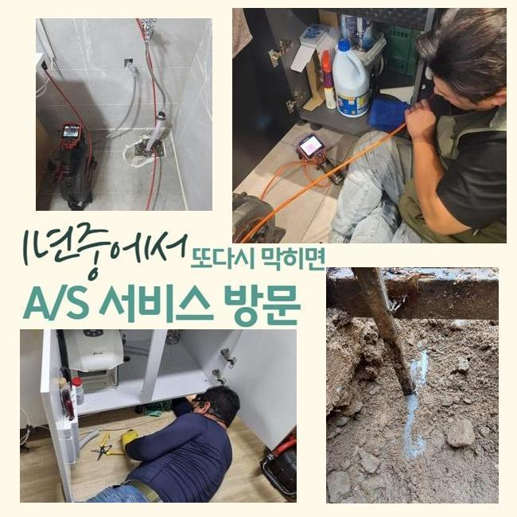
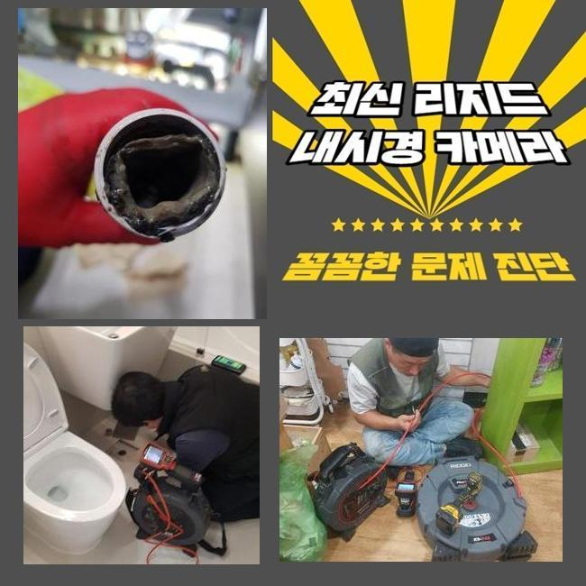
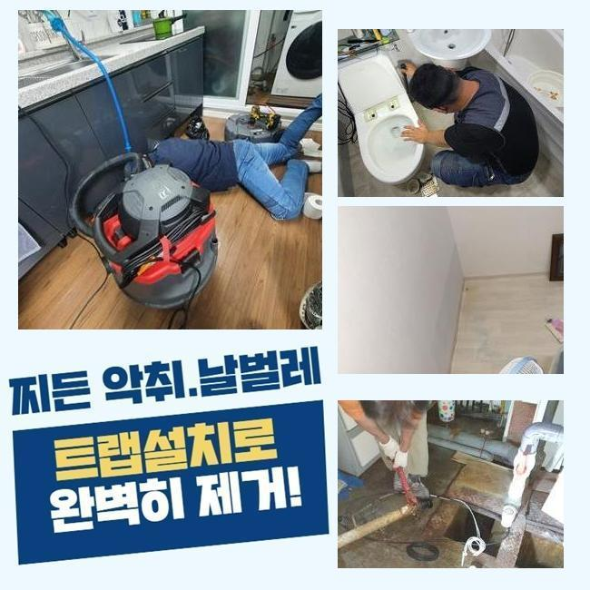
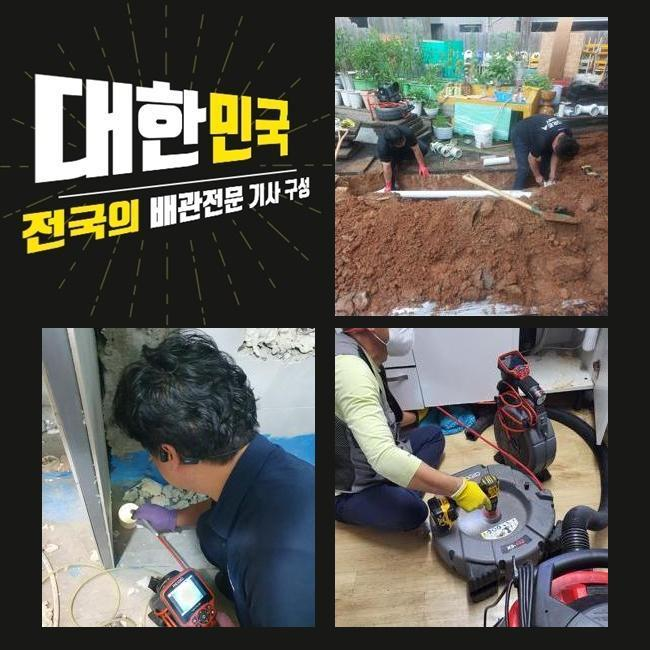
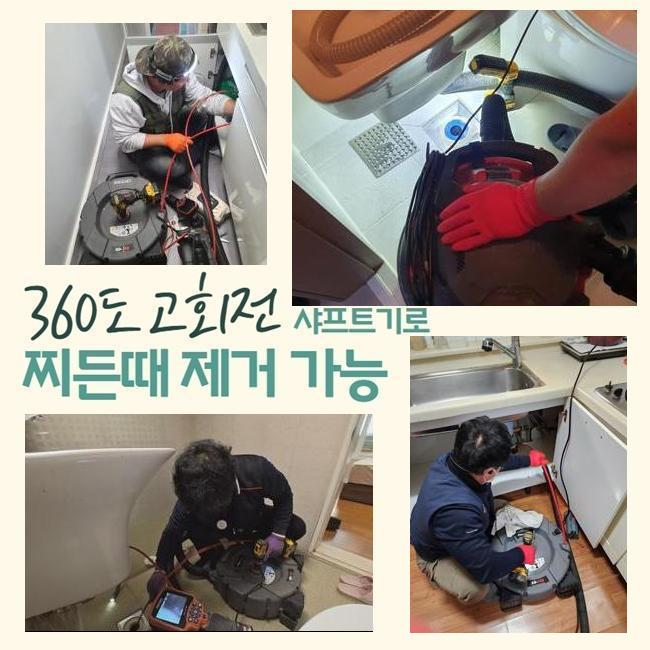
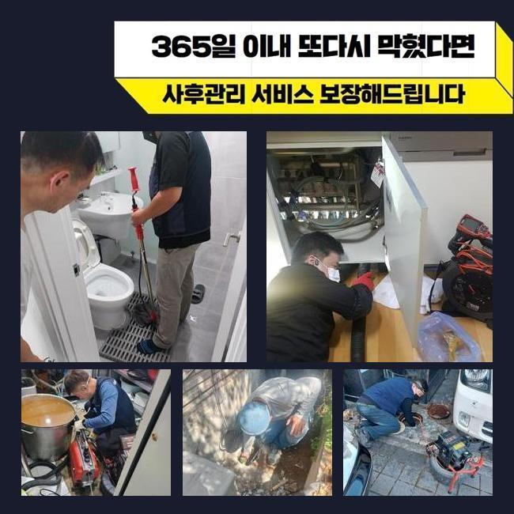

🏠 중구 인현동2가하수구역류 인현동1가 배수로뚫기 배관전문
용인 하수구막힘 전문 시공 후기

📋 작업 개요
- 위치: 용인
- 서비스 유형: 하수구막힘, 배관막힘, 맨홀막힘, 역류해결, 뚫는업체, 배관청소, 고압세척
- 작업 일시: 2024. 12. 10. 12:08
- 업체명: 하수구수사대 (010-5615-2118)
🔍 문제 상황
중구 인현동2가하수구역류 인현동1가 배수로뚫기 배관전문
주거지등과 음식점처럼 업소들에서 배수구가 막혀 고통들을 토로하시는 장소가 이따금씩 나타나게됩니다
해당 지점의 양상에 따라서 영업상의 불편과 더불어 피해들을 입으셨다면 조속한 조치가 실시되는 것이 좋겠습니다
우선은 꾸준히 재발양상이 거듭되지 못하도록 확실한 수습이 실시되는 전문인의 선별은 빠트려서는 안되겠습니다
우선은 외진 곳에 위치하고 있는 식자재 공장으로 보였는데요
해당 지점의 오수관로가 막히며 육안으로도 심각해보였기에 신속한 시정이 요구되었어요
완벽한 위생측면이 갖춰져있어야 할 식제품 작업장인 만큼 생산 시점의 업무를 할 수 없어 난항이 나타나게 되었는데요
작업들을 빠르게 진행시키고자 거시적으로 증세를 꼼꼼히 살폈습니다
얼마 전에도 다른 업체들이 내방하였으나 하수관을 짚어내지 못하는 바람에 문제를 풀어감에 고초를 면치 못했다 하셨어요

🔎 원인 분석
💡 전문가 진단: 정밀 진단 장비를 사용하여 슬러지의 고착 여부를 판명하고 타격/세척 작업을 실시했습니다.
설계도도 없었으나 첫번째로 중앙집수 라인의 스팟을 찾기위하여 시정을 진행시켰는데요
탐지도구를 가용해 위치들을 명확히 짚고자 했어요
내시경장치를 이용해주어 하수관을 디테일하게 관찰하여 까닭들을 확인해주었습니다
대체적으로 배수장애가 생기는 시점에는 식재료나 기름때 여러가지 잔해가 쌓이게되는 모습이 보입니다
이 현장도 마찬가지로 생각한대로 단단히 퇴적된 오염물들이 확인됐죠
대체적으로 전문인들은 스프링장치나 석션기기로 알려진 장비를 사용한답니다
입구부분에 물길자체만 내는게 가능한 까닭에 딱딱한 이물은 제거될 수 없어요
그렇기에 흡착물들과 강도높은 이물을 안정적으로 청소시켜주는 쎈 압력을 뽐내는 고수압기계의 사용으로 시공하게됩니다
오늘의 장소와같이 부지가 넓은 사업장에서는 문제규모도 대체로 큰 것이 사실입니다 이럴때 샤프트기 등으로 해결하는게 힘들기때문에 고압의 세척 과정을 이행시키는 현장도 다수 존재해요
그리하여 차와 연결된 고압 세척기를 이용해주어 배수관에 흡착된 기름성분들을 탈거해내 말끔히 제거하였어요

🔧 작업 과정
고수압의 방식으로 이물을 없애고 심층부까지 작업해주었어요
수리 후에는 작업 구간마다 내시경 촬영을 이용해서 확인해주었습니다
의뢰인분께도 세척된 상황을 직관적으로 보이기 위하여 검수는 동반하는걸 기본으로 합니다
이어서 내방한 곳은 상업용도 건축물 맨홀쪽에서 솟아오르는 증상들이 관찰되었습니다
외부하수관로는 비중자체가 커서 서두른 처리가 필요했는데요
맨홀시설과 길가의 하수관까지 전체적인 내시경장치로 확인해주었죠
검사해보았더니 며칠간이 아닌 오래도록 누적된 이물들이 관찰되는 상황의 심각성을 파악했습니다
검수를 마치고서는 적절한 장치로 작업들을 시작하였습니다
고압노즐로 내부에 누적된 다량의 슬러지들을 사라지게끔 하였는데요
수습을 하고서는 내시경카메라를 이용해주어 뒤탈없이 제거되어진 부분들을 목격했죠
갑작스럽게 나타날지 모르기때문에 증상으로 난처하실 의뢰자도 많기에 늦게까지 방문 및 작업들을 제공해 드리는데요
상가처럼 이용이 많다면 문제증상이 발생될 때, 불편이 한두가지가 아닙니다
금일엔 내시경기기로 점검해보고 흡착물들도 제거시키기위해 샤프트기기를 사용했는데요
2번째 장소에서도 배수관의 청소의 일환으로 청결하게 고압 세척을 실시해주었어요
작업 시 먼저 핵심은 내시경 카메라를 이용해주어 증상의 시작인 구간들을 조속히 짚어내는건데요
내시경기기를 쓰지않는다면 원인인점이 어디위치에 자리했는지 알기 힘들어 전문가들을 부르고자 할 때는 내시경장비의 사용을 필수적으로 물어보시길 바랍니다


✅ 작업 완료
하수시스템 오류가 생겨났을 때 고착물과 오수들을 청소하는건 배수관 전문인의 수습이 요구되고 셀프적인 대응도 효과가 있을 수 있으나 예기치못하게 문제의 경중이 수렁으로 빠지기에 반드시 전문업체를 호출하는게 비용으로도 손해가 아닌것입니다
배수관이 존재한다면 요청주시는 현장들에서 작업한 다음 무상보증 1년동안에 보장하여 큰 걱정은 없으십니다
청소가 잘되었는지 내시경기기를 공개하여 깨끗한 절차들을 진행시켜드릴것을 말씀드립니다
궁금하신 부분이 있으실 경우 편하실때 여쭈시면 응당 설명하겠습니다




⚠️ 하수구 배관 막힘 예방 및 관리 가이드
- ✅ 머리카락, 비닐, 물티슈 등 물에 분해되지 않는 이물질은 하수구 유입을 절대 금지해 주세요.
- ✅ 하수구 거름망을 씌우고 모여진 이물질은 주기적으로 쓰레기통에 바로 비워주셔야 합니다.
- ✅ 배관 노후가 심할 경우 이물질이 더 쉽게 걸리므로 주기적인 배관 세척(고압세척 등)을 권장합니다.
- ✅ 작업 후 1년 이내 재발 시 하수구수사대에서 무상 A/S 보증 서비스를 제공합니다.
💡 핵심 정리
- 확실한 장비 작업(내시경 점검 및 샤프트 스케일링)으로 원인을 뿌리 뽑습니다.
- 작업 후 1년 이내에 동일한 부위 재발 시 100% 무상 A/S 서비스를 보장합니다.
- 서울 · 경기 · 인천 전 지역에 24시간 언제든 긴급 출동할 수 있도록 항시 대기 중입니다.
❓ 자주 묻는 질문 (FAQ)
🚨 용인 하수구막힘 문제로 고민이신가요?
정확한 원인 진단과 확실한 시공으로 재발 없는 해결을 약속드립니다.
24시간 긴급 출동 | 서울 · 경기 · 인천 전지역 | 1년 내 재발 시 무상 A/S